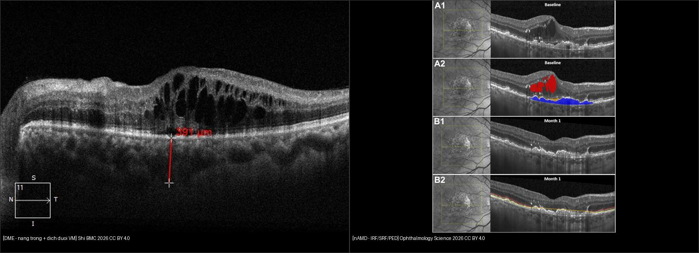
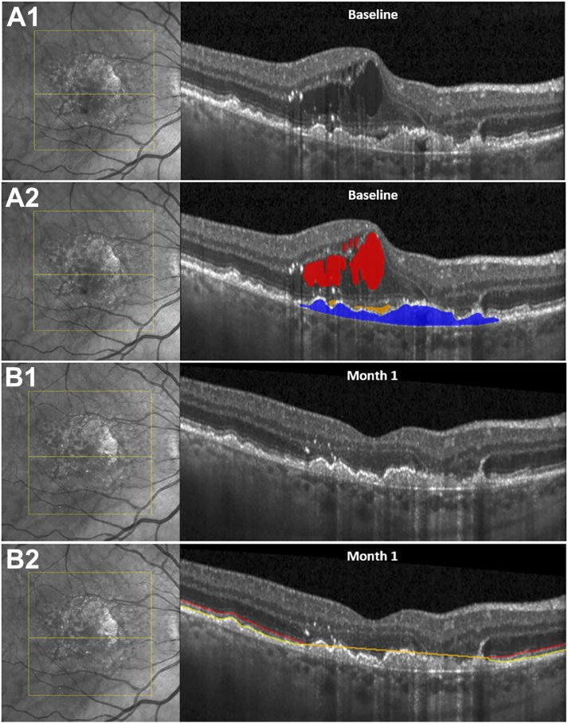
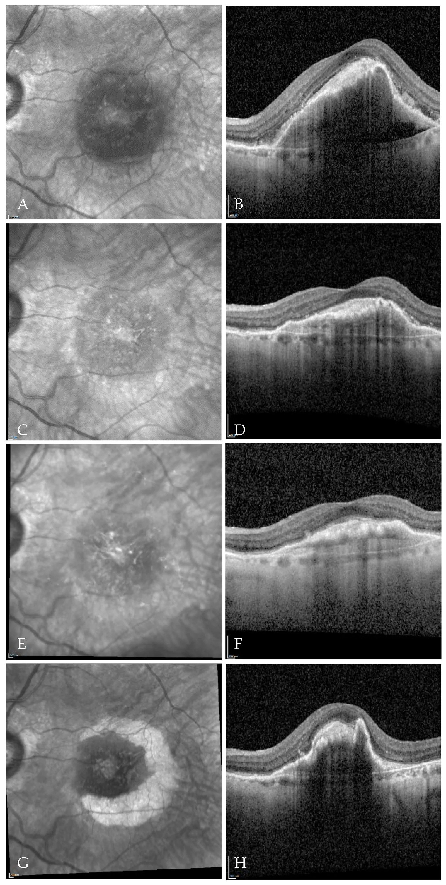

441 — OCT hoàng điểm: phù DME vs AMD / Macular OCT: DME vs AMD
Tags: pattern:OCT vung:hoang-diem
Mức chắc chắn (certainty): tổng hợp y văn (literature synthesis) — nhóm tự biên từ y văn mở, chưa gắn ca nguyên văn đơn lẻ.
1. Tổng quan — đọc OCT theo lớp + số CST
- OCT: nang trong võng mạc (DME) vs dưới/biểu mô sắc tố (AMD ướt) vs drusen (AMD khô). TẠI SAO vị trí dịch quyết định thuốc: DME tiêm nội nhãn anti-VEGF/steroid; AMD ướt CNV cần anti-VEGF sớm giữ thị lực.
- Số nằm lòng: CST (độ dày trung tâm) ≥ 300–320 µm = phù có ý nghĩa; DRIL (mất lớp trong) + đứt EZ (ellipsoid zone) = tiên lượng thị lực kém dù hết phù.
- Ngưỡng điều trị: DME trung tâm + giảm thị → tiêm; AMD ướt (dịch dưới võng mạc + CNV) → anti-VEGF tải 3 mũi/tháng.
2. Gamut dày hoàng điểm trên OCT
- DME: nang trong + tăng CST + ĐTĐ lâu + 2 bên — anti-VEGF/steroid/laser.
- AMD ướt: dịch dưới võng mạc/PED + CNV + già + drusen — anti-VEGF sớm.
- AMD khô: drusen + teo địa đồ, không dịch — bổ sung + theo dõi (đừng tiêm).
- Tắc tĩnh mạch (RVO): phù + XH + giãn TM 1 góc — anti-VEGF + laser.
3. Bảng so sánh
| Thực thể (entity) | OCT điển hình | Chốt vào (rule-in) | Chốt loại (rule-out) | Gợi ý xác nhận |
|---|---|---|---|---|
| DME | Nang trong + CST ≥ 300 µm, ĐTĐ 2 bên | ĐTĐ + nang trong + CST tăng | Dịch dưới võng mạc + CNV → AMD ướt | HbA1c + tiêm nội nhãn |
| AMD ướt | Dịch dưới/PED + CNV, già + drusen | Dưới võng mạc + CNV + tuổi | Nang trong thuần + ĐTĐ → DME | FA/OCT-A + anti-VEGF sớm |
| AMD khô | Drusen + teo, không dịch | Drusen + không dịch | Có dịch → ướt (chuyển điều trị) | Theo dõi, bổ sung |
| RVO | Phù + XH + giãn TM 1 góc | XH + TM giãn theo vùng | 2 bên đối xứng → DME/HA | Anti-VEGF + laser |

Trái: nang trong + dịch dưới võng mạc (Shi, BMC Ophthalmology 2026, CC BY 4.0). Phải: đỏ = IRF, vàng = SRF, xanh = PED (Ophthalmology Science 2026, CC BY 4.0). Ảnh ghép letterbox.Quiz composite: che 2 nhãn, hỏi bên nào là AMD ướt?
Bấm để hiện đáp án
- Trái = DME — nang trong là chủ đạo, BN ĐTĐ.
- Phải = AMD ướt — PED xanh + SRF vàng ở người già là chốt (DME thuần hiếm PED lớn).
4. Protocol OCT
- Macular cube + đo CST + đánh giá DRIL/EZ + so sánh 2 mắt/lần trước.
- FA/OCT-A khi nghi CNV (AMD ướt) hoặc thiếu máu (RVO).
- Tiêm nội nhãn: vô khuẩn + theo dõi viêm nội nhãn (đau + mờ cấp sau tiêm = cấp cứu).
5. Cạm bẫy
- DRIL/EZ đứt = thị lực không hồi dù CST về bình thường — tiên lượng thật với BN.
- Vitreomacular traction giả DME — tìm màng kéo, mổ vitrektomy thay vì tiêm mãi.
- Viêm nội nhãn sau tiêm (đau + mờ giờ-ngày) — cấp cứu, đừng chờ tái khám.
6. Tự lượng giá — Blind Quiz
Ca 1 — ĐTĐ mờ 2 mắt. Nhìn OCT, dịch nằm ở khoang nào?

- Hỏi: nang tối nằm trong hay dưới võng mạc? DME hay AMD ướt? Thuốc gì đầu tay?
Bấm để hiện đáp án (findings + chẩn đoán)
- Dấu hiệu (findings): nang tối trong võng mạc (intraretinal cysts) + dịch dưới võng mạc, hoàng điểm dày.
- Chẩn đoán (diagnosis): DME (phù hoàng điểm đái tháo đường) — vì nang TRONG là chủ đạo ở BN ĐTĐ (chi tiết bài 443).
- Xử trí: anti-VEGF nội nhãn (tham chiếu: CMT 466 → 279 µm sau 6 tháng Conbercept).
- Nguồn ảnh: Shi et al., BMC Ophthalmology 2026 Fig. 3 (PMC13182033), CC BY 4.0. Lưu ý trung thực nguồn: vạch đỏ 391 µm là SFCT (hắc mạc), không phải CMT.
Ca 2 — Cụ 78 tuổi mờ 1 mắt. Cặp OCT gốc + bản AI tô màu này đọc thế nào?

- Hỏi: 3 màu đỏ/vàng/xanh là 3 khoang nào? DME hay AMD ướt? Vì sao phải tách riêng 3 khoang?
Bấm để hiện đáp án (findings + chẩn đoán)
- Dấu hiệu (findings): đỏ = dịch trong võng mạc (IRF), vàng = dịch dưới võng mạc (SRF), xanh = bong biểu mô sắc tố (PED) — đủ bộ 3 khoang của tân mạch hắc mạc.
- Chẩn đoán (diagnosis): AMD ướt (nAMD) — vì PED + SRF ở người già (DME thuần hiếm khi có PED lớn).
- Vì sao tách khoang: IRF nhiều + EZ mất = tiên lượng thị lực kém nhất; SRF đơn thuần đáp ứng anti-VEGF tốt hơn — thể tích từng khoang quyết định lịch tiêm.
- Nguồn ảnh: Ophthalmology Science 2026 Fig. 1 (PMC13487276), CC BY 4.0.
Ca 3 — nAMD có PED cao đang tiêm anti-VEGF. Dải OCT theo thời gian này cảnh báo gì?

- Hỏi: PED xẹp hay phồng dần sau các mũi tiêm? Biến chứng rách nào phải cảnh báo trước khi PED quá cao?
Bấm để hiện đáp án (findings + chẩn đoán)
- Dấu hiệu (findings): PED tồn tại/dày lên qua các thời điểm dù đã tiêm aflibercept nhiều mũi (NIR + OCT tương ứng từng cặp).
- Chẩn đoán (diagnosis): PED kháng trị trong nAMD — nguy cơ rách biểu mô sắc tố (RPE tear) khi PED cao + căng.
- Xử trí: cảnh báo BN + OCT sát (rách RPE = mất thị lực đột ngột, không có thuốc đảo ngược); cân nhắc đổi thuốc/liều, đừng tiêm mù.
- Nguồn ảnh: J Clin Med 2026 Fig. 5 (PMC13513911), CC BY 4.0.
Bài liên quan chéo
- 400 – Tổng quan Mắt
- 401 – Phương thức CĐHA mắt (OCT)
- 411 – Siêu âm nhãn cầu (võng mạc)
- 443 – Võng mạc đái tháo đường (DME + ETDRS)
Ảnh
441_DME-nang-trong_OCT_PMC13182033-Fig3-CCBY.jpg— Shi et al., BMC Ophthalmology 2026 (PMC13182033), CC BY 4.0.441_nAMD-IRF-SRF-PED_OCT_PMC13487276-Fig1-CCBY.jpg— Ophthalmology Science 2026 (PMC13487276), CC BY 4.0.441_AMD-PED-tien-trien_OCT_PMC13513911-Fig5-CCBY.jpg— J Clin Med 2026 (PMC13513911), CC BY 4.0 (gốc .webp, chuyển .jpg giữ nguyên điểm ảnh).- Chi tiết giấy phép từng ảnh trong
images/CREDITS.md.
Không dùng để chẩn đoán độc lập khi chưa có người hướng dẫn.